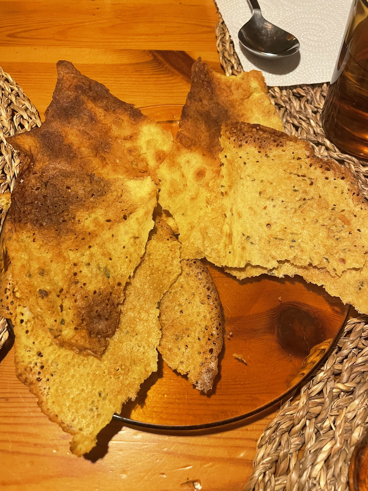

Creps socca de garbanzo
Ingredients
2×
- 100 g de harina de garbanzo
- 200 ml de agua
- 1 cda de aceite de oliva
- 1 pizca de sal

Preparación
Paso 1
Mezclar 100 g de harina de garbanzo con 200 ml de agua, 1 cda de aceite de oliva y 1 pizca de sal hasta obtener una masa líquida. Dejar reposar 30min si se puede.
Paso 2
Calentar una sartén con un poco de aceite, verter una capa fina de masa y cocer 2-3min por cada lado, hasta que quede dorada y crujiente.
Paso 3
Repetir con el resto de la masa y servir cortadas en trozos.